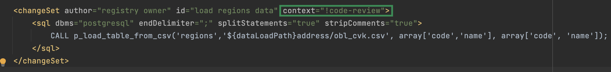

Liquibase extensions for data modeling
| This document is available in both English and Ukrainian. Use the language toggle in the top right corner to switch between versions. |
| Use UTF-8 encoding to describe the registry data model. |
General description
The registry data model is defined declaratively using XML templates that the Liquibase tool processes and generates SQL structures.
Due to the Platform’s architecture complexity, standard Liquibase functionality only covers some of the needs when working with data structures.
The Platform’s liquibase-ddm-ext module extends Liquibase’s functionality and provides additional custom tags for the Liquibase XML templates. In Liquibase terminology, these tags are called Change Types. Custom tags cover the following categories:
| A complete list of advanced tags and their parameters is stored in this XSD schema. |
Table management
Creating tables
The createTable tag creates a table in the database.
When using the createTable tag, you must also use the ext:historyFlag attribute and set it to true. This extended attribute is used to track the history of changes.
XML schema example
<createTable tableName="test" ext:historyFlag="true">
<column name="role_id" type="BIGINT">
<constraints nullable="false" primaryKey="true" primaryKeyName="pk_pd_subject_role"/>
</column>
<column name="role_name" type="TEXT">
<constraints nullable="false"/>
</column>
</createTable>|
Each Therefore, the |
| For details on creating tables, see data-modeling/data/physical-model/liquibase-changes-management-sys-ext.adoc#create-table-hst. |
Table creation attributes and possible values
bulkLoad attribute
The bulkLoad attribute lets you quickly load data into tables from files or arrays.
- Possible values:
-
-
true: Enable bulk data loading into the table from files (for example, CSV) or arrays (LIST). This ensures optimal performance and efficiency when working with large datasets. -
false: Disable bulk data loading into the table from files or arrays. In this case, data is imported into the table using separateINSERToperations, which can be less efficient when working with large volumes of data.
-
Example of creating a table with bulkLoad="true"
<changeSet author="..." id="initial creation">
<ext:createTable name="example_bulk" bulkLoad="true">
<column name="id" type="UUID" defaultValueComputed="uuid_generate_v4()">
<constraints nullable="false" primaryKey="true" primaryKeyName="pk_example_bulk_id"/>
</column>
<column name="first_name" type="text"/>
...
...
</ext:createTable>
</changeSet>readMode attribute
The readMode attribute lets you control the read behavior for the registry’s database tables. It determines how the system should read data from the table: synchronously or asynchronously. Set the read behavior depending on your performance requirements.
- Possible values:
-
-
sync: Set synchronous read mode. In this mode, the system reads data in a sequence (data is read at theregistry-rest-apilevel). The read request is blocked until the database server returns data. This means the application is paused while waiting for the query results. The synchronous mode can be useful in cases where it is important to ensure the sequence of operations. -
async: Set asynchronous read mode. In this mode, the read request sent to the database server does not block the application from running (data is read viarest-api>registry-kafka-api>rest-api). Instead, the application continues working, and the reading results are processed when available. The asynchronous mode increases the application’s performance because it does not wait until the reading operations are completed. This can be useful in cases where it is necessary to process a large number of requests simultaneously or when the response time of the database server is unpredictable.
-
Example of creating a table with readMode="sync"
<changeSet>
<ext:createTable name="example_read_mode" readMode="sync">
<column name="id" type="UUID" defaultValueComputed="uuid_generate_v4()">
<constraints nullable="false" primaryKey="true" primaryKeyName="pk_example_read_mode_id"/>
</column>
<column name="first_name" type="text"/>
...
...
</ext:createTable>
</changeSet>ext:autoGenerate attribute
The ext:autoGenerate attribute is a custom Liquibase extension attribute that automatically generates column values when inserting records into a table. It is used in the <column> tag.
Use this attribute to generate a unique and user-friendly number for an entity created in the registry (such as a document or certificate). The number is generated when the entity is saved and is unique within the registry instance.
XML schema
<createTable ...>
...
<column name="column_name" ext:autoGenerate="AA-{dd-MM-yyyy}-{SEQ}">
</column>
...
</createTable>In this example, the ext:autoGenerate attribute defines a template for the column_name column values using the following format: AA-{dd-MM-yyyy}-{SEQ}
The system will automatically generate values that will look like this: AA-day-month-year-sequence.
Here "AA" is the document code, "day," "month," and "year" define the date in the dd-MM-yyyy format, and "sequence" contains a unique record number.
|
For details, see Generating a unique number for registry entities. |
Changing API behavior at the level of the table creation structure
Regulations developers can modify API behavior settings at the level of the table creation structure.
For this, you can use ext:alterTableApi, a custom Liquibase extension tag. This tag enables you to modify specific table attributes that do not affect the data structure but influence the API code generation.
For example, ext:alterTableApi can allow editing attributes such as bulkLoad or readMode that control the ability to load data into the table from files or arrays and the data read mode (synchronous or asynchronous), respectively.
|
For details on |
This tag helps regulations developers and modelers control API behavior settings for tables after they are created without changing the data structure.
The tag uses the ext:attribute extension, which accepts the key (name) and the value (value) of the attribute for which the behavior needs to be changed.
|
XML schema of using the ext:alterTableApi tag
<changeSet author="..." id="change api behavior">
<ext:alterTableApi table="example_bulk_1">
<ext:attribute name="bulkLoad" value="true"/>
<ext:attribute name="readMode" value="sync"/>
</ext:alterTableApi>
<ext:alterTableApi table="example_bulk_2">
<ext:attribute name="bulkLoad" value="false"/>
</ext:alterTableApi>
</changeSet>
Use the
|
Extended XML schema. Deploying tables with certain attribute values and subsequently changing these values using the ext:alterTableApi tag
<databaseChangeLog>
<changeSet author="..." id="initial creation">
<ext:createTable name="example_bulk" bulkLoad="false">
<column name="id" type="UUID" defaultValueComputed="uuid_generate_v4()">
<constraints nullable="false" primaryKey="true" primaryKeyName="pk_example_bulk_id"/>
</column>
<column name="first_name" type="text"/>
...
...
</ext:createTable>
<ext:createTable name="example_read_mode" readMode="sync">
<column name="id" type="UUID" defaultValueComputed="uuid_generate_v4()">
<constraints nullable="false" primaryKey="true" primaryKeyName="pk_example_read_mode_id"/>
</column>
<column name="first_name" type="text"/>
...
...
</ext:createTable>
</changeSet>
<changeSet author="..." id="change api behavior">
<ext:alterTableApi table="example_bulk">
<ext:attribute name="bulkLoad" value="true"/>
<ext:attribute name="readMode" value="sync"/>
</ext:alterTableApi>
<ext:alterTableApi table="example_bulk">
<ext:attribute name="bulkLoad" value="true"/>
</ext:alterTableApi>
</changeSet>
</databaseChangeLog>Managing search conditions
You build the registry data model in the regulations using XML tags. One of these tags, <createSearchCondition>, creates search conditions, or SC for short. For example: <ext:createSearchCondition name="search_condition_test">.
Each condition contains information about search parameters such as the table and the column to search, which type of search to use, and so on.
Liquibase processes the XML model and creates view tables, virtual tables that contain information from one or more real tables within the database. View tables have a _v prefix added to their name—for example, search_condition_test_v.
When the registry data model is deployed, the system creates a REST API endpoint for each search condition using the table name without the prefix but with a dash-case convention—for example, search-condition-test.
When you make a request to the /search-condition-test API resource, the response returns data from the search_condition_test_v view table.
- Example of calling the SC API:
-
https://<server-name>-<namespace>/search-condition-test?offset=0&limit=10.
Tag for creating a simple search criteria
- Change type name:
<createSimpleSearchCondition> -
The
createSimpleSearchConditiontag creates a simple search condition, including a view for one table and an index for the specified search field.
XML schema example
<changeSet author="registry owner" id="searchConditionSimpleTest">
<comment>CREATE simple test search condition</comment>
<ext:createSimpleSearchCondition name="search_condition_simple_test" indexing="true" limit="all">
<ext:table name="search_condition_simple_test" alias="c" searchType="equal" searchColumn="person_full_name"/>
</ext:createSimpleSearchCondition>
</changeSet>| If you create an index without specifying the search field, the system will return an error. |
| For details on creating a simple search condition, see the XML template for a simple search condition (scenario 1) section. |
Tag for creating a search condition
- Change type name:
<createSearchCondition> -
The
createSearchConditiontag creates a search condition, including a view for several tables and their relationships.
|
This tag can also create indexes for each search field. Set the additional |
XML schema example
<ext:createSearchCondition name="search_condition" limit="1" indexing="true">
<ext:table name="table_one" alias="to">
<ext:column name="name" alias="to_name" searchType="equal"/>
<ext:column name="type"/>
<ext:function name="count" alias="cnt" columnName="uuid"/>
</ext:table>
<ext:table name="table_two" alias="tt">
<ext:column name="name" alias="tt_name"/>
<ext:column name="code"/>
</ext:table>
<ext:join type="left">
<ext:left alias="to">
<ext:column name="name"/>
</ext:left>
<ext:right alias="tt">
<ext:column name="name"/>
</ext:right>
</ext:join>
<ext:where>
<ext:condition tableAlias="to" columnName="type" operator="eq" value="'char'">
<ext:condition logicOperator="or" tableAlias="to"
columnName="type" operator="eq" value="'text'"/>
</ext:condition>
<ext:condition logicOperator="and" tableAlias="tt" columnName="code" operator="similar" value="'{80}'"/>
</ext:where>
</ext:createSearchCondition>
|
|
For details on different scenarios of using search conditions, see the following sections: |
<ext:where> operator
- Possible values:
-
Value Description Symbol (Unicode) Comment eqequals
=
nenot equal
<>
gtgreater than
>
gegreater than or equal to
>=
ltless than
<
leless than or equal to
⇐
innotInisNullis null
If value =
true, then the column check is is null; if value =false, then the column check is is not null.similarsimilar
~
-
To specify a text value, wrap it in single quotes.
-
With
<ext:function>, you can use aggregate functions:min(),max(),avg(),count(),sum(). The fields used in these functions are removed from the output (SELECT). All other table fields are included in grouping (GROUP BY).
Search conditions attributes and possible values
searchType attribute
The searchType attribute in the <ext:column> element indicates the type of operation to perform for a specific column when searching the table.
Possible values:
equal-
Returns values that exactly match the one you specified.
Example 1. XML schema<ext:createSearchCondition name="search_condition"> <ext:table name="table_one"> <ext:column name="name" alias="to_name" searchType="equal"/> <ext:column name="type"/> <ext:function name="count" alias="cnt" columnName="uuid"/> </ext:table> </ext:createSearchCondition> startsWith-
Returns values with the prefix you specified—that is, values that "start with" the given condition.
Example 2. XML schema example<ext:createSearchCondition name="pd_consent_subject_name_startswith"> <ext:table name="pd_processing_consent_subject"> <ext:column name="consent_id" fetchType="entity" /> <ext:column name="scan_copy" /> <ext:column name="legal_entity_name" sorting="asc" searchType="startsWith" /> <ext:column name="consent_subject_id"/> </ext:table> </ext:createSearchCondition> contains-
Returns values that match the value you specified anywhere in the string (beginning, middle, or end).
Example 3. XML schema<ext:createSearchCondition name="SearchCondition" limit="1"> <ext:table name="table_two" alias="tt"> <ext:column name="name" alias="tt_name"/> <ext:column name="code" searchType="contains"/> <ext:function name="sum" alias="sm" columnName="code"/> </ext:table> </ext:createSearchCondition> in-
Returns values that exactly match the values you specified in an array. Similar to
equalbut works with multiple values.Example 4. XML schema<ext:createSearchCondition name="findInAge"> <ext:table name="user"> <ext:column name="firstName" returning="true"/> <ext:column name="lastName" returning="true"/> <ext:column name="age" searchType="in"/> </ext:table> </ext:createSearchCondition>Example 5. An HTTP request using the "in" operatorhttps://..../findInAge?age=18,21,42 notIn-
Returns values that do not match the values you specified in an array. The opposite of the
insearch type.Example 6. XML schema<ext:createSearchCondition name="findNotInAge"> <ext:table name="user"> <ext:column name="firstName" returning="true"/> <ext:column name="lastName" returning="true"/> <ext:column name="age" searchType="notIn"/> </ext:table> </ext:createSearchCondition>Example 7. An HTTP request using the "notIn" operatorhttps://..../findNotInAge?age=18,21,42 between-
Returns values that belong to the range you specified (from/to).
Example 8. XML schema<ext:createSearchCondition name="findBetweenAge"> <ext:table name="user"> <ext:column name="firstName" returning="true"/> <ext:column name="lastName" returning="true"/> <ext:column name="age" searchType="between"/> </ext:table> </ext:createSearchCondition>Example 9. An HTTP request using the "between" operatorhttps://..../findBetweenAge?ageFrom=18&ageTo=42
limit attribute
The limit attribute specifies the maximum number of results (rows) to return in an API response for a search condition.
- Possible values:
-
-
limit="all": Returns all results for a search condition. -
limit="10"(any number provided as string): Returns a limited number of results for a search condition.
If this attribute is not specified, all results are returned. -
For example, if the limit attribute in the <ext:createSimpleSearchCondition> tag has a value of 10, the maximum number of results that the API for the search condition will return will be 10.
<changeSet author="registry owner" id="searchConditionSimpleTest">
<comment>CREATE simple test search condition</comment>
<ext:createSimpleSearchCondition name="search_condition_simple_test" indexing="true" limit="10">
<ext:table name="search_condition_simple_test" alias="c" searchType="equal" searchColumn="person_full_name"/>
</ext:createSimpleSearchCondition>
</changeSet>In other words, if the search_condition_simple_test table has more than 10 records that meet the search criteria defined in the <ext:createSimpleSearchCondition> tag, and the limit attribute is set to 10, the search condition will return only the first 10 rows.
indexing attribute
The indexing attribute automatically creates indexes for the columns that are searched.
- Possible values:
-
-
indexing="true": Create an index. -
indexing="false": Don’t create an index.You can omit this attribute if you don’t need to create indexes. Use indexing="false"when it is necessary to state this in the data model schema explicitly.
-
<changeSet author="registry owner" id="searchConditionSimpleTest">
<comment>CREATE simple test search condition</comment>
<ext:createSimpleSearchCondition name="search_condition_simple_test" indexing="true" limit="10">
<ext:table name="search_condition_simple_test" alias="c" searchType="equal" searchColumn="person_full_name"/>
</ext:createSimpleSearchCondition>
</changeSet>The indexing="true" attribute in the <ext:createSimpleSearchCondition> tag indicates that indexing for the specified column (person_full_name) must be enabled.
In this example, an index will be created for the person_full_name column since indexing is set to true. The index speeds up the search, reduces the time it takes to process the queries, and makes them more efficient.
returning attribute
The returning attribute indicates whether to return a value in an API response.
- Possible values:
-
-
returning="true": Return the value. -
returning="false": Don’t return the value.
-
<changeSet author="registry owner" id="searchCondition test">
<comment>CREATE test search condition</comment>
<ext:createSearchCondition name="searchConditionTest" indexing="true">
<ext:table name="consent_data_person" alias="c">
<ext:column name="person_full_name" searchType="equal" returning="true" type="text"/>
<ext:column name="person_pass_number" returning="true" type="varchar"/>
<ext:column name="consent_date" returning="true"/>
</ext:table>
<ext:table name="consent_subject" alias="cs">
<ext:column name="legal_entity_name" alias="srch_legal_entity_name" returning="true"/>
<ext:column name="edrpou" alias="srch_edrpou" returning="true"/>
</ext:table>
<ext:join type="inner">
<ext:left alias="c">
<ext:column name="consent_id"/>
</ext:left>
<ext:right alias="cs">
<ext:column name="consent_id"/>
</ext:right>
</ext:join>
</ext:createSearchCondition>
</changeSet>If the returning attribute in the <ext:column> element is set to true, the values of the corresponding column will be included in the query result.
In this example, the values of person_full_name, person_pass_number, and consent_date columns from the consent_data_person table and the legal_entity_name and edrpou columns from the consent_subject table will be included in the query result since returning is set to true.
By default, returning is set to true. If you want to exclude the values of specific columns from the response, set returning="false".
|
pagination attribute
Allowing external systems to run requests works by adding the <exposeSearchCondition> tag (for details, jump to Tag for setting integration points with other registries and external systems).
|
The pagination attribute can have the following values:
- offset
-
Returns a specified number of records, considering offset-based pagination. In an API request, the number of records is determined by the
limitparameter.By default, pagination is enabled and set as pagination="offset".- How do offset and limit work?
-
Consider a table with 100 records.
To get just the first 10 records (from 1 to 10), set your API request to
offset=0(or omit it) andlimit=10.To get the next 10 records (from 11 to 20), set
offset=10andlimit=10. If you need to get the records from 11 to 30, setoffset=10andlimit=20, and so on.This way, the records in a request are offset by 10s.
Example 13. Creating a search condition in the registry data model using the pagination="offset" attribute<changeSet author="registry owner" id="create SC get_requests_by_search_param_offset"> <ext:createSearchCondition name="get_requests_by_search_param_offset" pagination="offset"> <ext:table name="request_by_search_param"> <ext:column name="request_by_search_param_id"/> <ext:column name="name"/> <ext:column name="search_param"/> </ext:table> </ext:createSearchCondition> </changeSet>This example creates a search condition called
get_requests_by_search_param_offsetand allows querying therequest_by_search_paramtable using thesearch_paramparameter with offset-based pagination (thepagination="offset"attribute).Example 14. An HTTP request using query "offset" and "limit" parametershttps://registry-rest-api-mdtu-ddm-edp-cicd-platform-demo.apps.cicd2.mdtu-ddm.projects.epam.com/get-requests-by-search-param-offset?offset=0&limit=10Example 15. API response[ { "searchParam": "string", "requestBySearchParamId": "3fa85f64-5717-4562-b3fc-2c963f66afa6", "name": "string" } ]Example of OpenAPI specification
- page
-
Returns information about the current page, the number of items on the page, the total number of items, and the total number of pages.
By default, pagination is enabled and set as pagination="offset".Example 16. Creating a search condition using the pagination="page" attribute<changeSet author="registry owner" id="create SC get_requests_by_search_param_page"> <ext:createSearchCondition name="get_requests_by_search_param_page" pagination="page"> <ext:table name="request_by_search_param"> <ext:column name="request_by_search_param_id"/> <ext:column name="name"/> <ext:column name="search_param"/> </ext:table> </ext:createSearchCondition> </changeSet>This example creates a search condition called
get_requests_by_search_param_pageand allows querying therequest_by_search_paramtable using thesearch_paramparameter with page-based pagination (thepagination="page"attribute).Example 17. An HTTP request using query "pageSize" and "pageNo" parametershttps://registry-rest-api-mdtu-ddm-edp-cicd-platform-demo.apps.cicd2.mdtu-ddm.projects.epam.com/get-requests-by-search-param-page?pageSize=10&pageNo=0- Request query parameters:
-
-
pageSize: The number of elements on the page.10by default. -
pageNo: The page number.0by default.
-
Example 18. API response{ "content": [ { "searchParam": "string", "name": "string", "requestBySearchParamId": "3fa85f64-5717-4562-b3fc-2c963f66afa6" } ], "totalElements": 0, "totalPages": 0, "pageNo": 0, "pageSize": 10 }- API returns the following attributes:
-
-
content: An array of elements that match the search criteria. -
totalElements: The total number of elements requested. -
totalPages: The total number of pages requested. -
pageSize: The number of elements on the page. -
pageNo: The page number being returned.
-
An example of OpenAPI specification
- none
-
This attribute allows disabling pagination for API queries.
By default, pagination is enabled and set as pagination="offset".Example 19. Creating a search condition using the pagination="none" attribute<changeSet author="registry owner" id="create SC get_requests_by_search_param_nopage"> <ext:createSearchCondition name="get_requests_by_search_param_nopage" pagination="none"> <ext:table name="request_by_search_param"> <ext:column name="request_by_search_param_id"/> <ext:column name="name"/> <ext:column name="search_param"/> </ext:table> </ext:createSearchCondition> </changeSet>This example creates a search condition called
get_requests_by_search_param_nopageand allows querying therequest_by_search_paramtable using thesearch_paramparameter without pagination (thepagination="none"attribute).
Using the JOIN operation with AND and OR conditions
The <ext:join> operation enables joining tables using different conditions. It is used when creating search conditions inside the <ext:createSearchCondition> tag to get the necessary data in roll-up tables.
- There are three main join types:
-
-
INNER JOIN: An intersection of data from two tables. For example,
<ext:join type="inner">. -
LEFT JOIN: Extracts data from the first table (left) and joins data from the second table (right) where possible. For example,
<ext:join type="left">. -
RIGHT JOIN: The opposite of LEFT JOIN. For example,
<ext:join type="right">.
-
You can use the <ext:join> operation with additional AND and OR operators, which you can define within the <ext:condition> tag as the value of the logicOperator attribute.
<ext:createSearchCondition name="get_regions_or_citi_regions">
<ext:table name="katottg" alias="k">
<ext:column name="katottg_id" />
<ext:column name="name" alias="name_region" searchType="startsWith" />
<ext:column name="category" />
</ext:table>
<ext:table name="katottg_category" alias="cat">
<ext:column name="name" alias="name_category" />
<ext:column name="code" />
</ext:table>
<ext:join type="inner">
<ext:left alias="k">
<ext:column name="category" />
</ext:left>
<ext:right alias="cat">
<ext:column name="code" />
</ext:right>
</ext:join>
</ext:createSearchCondition><ext:createSearchCondition name="get_regions_or_citi_regions">
<ext:table name="katottg" alias="k">
<ext:column name="katottg_id" />
<ext:column name="name" alias="name_region" searchType="startsWith" />
<ext:column name="category" />
</ext:table>
<ext:table name="katottg_category" alias="cat">
<ext:column name="name" alias="name_category" />
<ext:column name="code" />
</ext:table>
<ext:join type="inner">
<ext:left alias="k">
<ext:column name="category" />
</ext:left>
<ext:right alias="cat">
<ext:column name="code" />
</ext:right>
<ext:condition logicOperator="and" columnName="k.category" operator="eq" value="'K'"/>
</ext:join>
</ext:createSearchCondition><ext:createSearchCondition name="get_regions_or_citi_regions">
<ext:table name="katottg" alias="k">
<ext:column name="katottg_id" />
<ext:column name="name" alias="name_region" searchType="startsWith" />
<ext:column name="category" />
</ext:table>
<ext:table name="katottg_category" alias="cat">
<ext:column name="name" alias="name_category" />
<ext:column name="code" />
</ext:table>
<ext:join type="inner">
<ext:left alias="k">
<ext:column name="category" />
</ext:left>
<ext:right alias="cat">
<ext:column name="code" />
</ext:right>
<ext:condition logicOperator="or" columnName="k.category" operator="eq" value="cat.code">
<ext:condition logicOperator="and" columnName="k.category" operator="ne" value="'K'"/>
<ext:condition logicOperator="and" columnName="k.level" operator="eq" value="'1'"/>
</ext:condition>
</ext:join>
</ext:createSearchCondition>|
To learn more about using JOIN and additional operators, see Scenarios of combining tables using JOIN with additional AND and OR conditions. |
Tag for deleting a search condition
- Change type name:
<dropSearchCondition> -
The
dropSearchConditiontag deletes a search condition.
XML schema example
<ext:dropSearchCondition name="search_condition"/>|
For details, see the following section: XML template for deleting a search condition. |
Tag for setting integration points with other registries and external systems
- Change type name:
<exposeSearchCondition> -
The
exposeSearchConditiontag enables you to set integration points with other registries and external systems.
XML schema example
<ext:exposeSearchCondition name="viewForDrop" platform="true" externalSystem="true" trembita="false"/>- The exposeSearchCondition tag accepts the following attributes:
-
-
name: Search condition name.
-
platform: A flag that provides access to the registry’s views and REST API for another registry on the Platform.
-
externalSystem: A flag that provides access to the registry’s views and REST API for an external system.
-
Managing custom data types
Tag for creating an enumerated data type (ENUM)
- Change type name:
<createType> <ext:asEnum> -
This tag creates an enumerated data type (ENUM).
XML schema example
<ext:createType name="type_gender">
<ext:asEnum>
<ext:label translation="">FEMALE</ext:label>
<ext:label translation="">MALE</ext:label>
</ext:asEnum>
</ext:createType>Tag for creating a composite data type
- Change type name:
<createType> <ext:composite> -
This tag creates a composite data type.
XML schema example
<ext:createType name="field_access_type">
<ext:composite>
<ext:column name="masked_value" type="TEXT" collation="uk_UA.utf8"/>
<ext:column name="opened" type="BOOLEAN"/>
<ext:column name="private" type="BOOLEAN"/>
<ext:column name="confidential" type="BOOLEAN"/>
<ext:column name="secret" type="BOOLEAN"/>
<ext:column name="service" type="BOOLEAN"/>
</ext:composite>
</ext:createType>| For details, see the following section: Schema for creating enumerated and composite data types. |
Tag for deleting a data type
- Change type name:
<dropType> -
The
dropTypetag deletes a data type.
XML schema example
<ext:dropType name=" type_gender"/>A tag for creating a custom data type with optional constraints
- Change type name:
<createDomain> -
The
createDomaintag creates a custom data type with optional constraints.
XML schema example
<ext:createDomain name="dn_passport_num"
dataType="CHAR(8)">
<ext:constraint implementation="NOT NULL"/>
<ext:constraint name="passport_number_chk"
implementation="CHECK (VALUE ~ '^[]{2}[0-9]{6}$)"/>
</ext:createDomain>| For details, see the following section: Schema for creating a domain data type. |
Creating a many-to-many relationship type
- Change type name:
<createMany2Many> -
The
createMany2Manytag creates a many-to-many relationship type that performs the following functions:-
Creates a data view by unwrapping an array into rows.
-
Creates an index.
-
XML schema example
<ext:createMany2Many
mainTableName="table1"
mainTableKeyField="column_id"
referenceTableName="table2"
referenceKeysArray="columns"/>Where "columns" has the following type: "UUID[ ]" -"Array of identifiers"
| For details on creating relationships between the tables, see the following section: Schema for modeling relationships between database entities. |
Saving multiple entities within a single transaction
- Change type name:
<createCompositeEntity> -
The
createCompositeEntitytag enables you to save multiple entities within a single transaction.
XML schema example
<ext:createCompositeEntity name="nested_tables">
<ext:nestedEntity table="table_one">
<ext:link column="two_column_id" entity="table_two"/>
</ext:nestedEntity>
<ext:nestedEntity name="tableTwo" table="table_two">
<ext:link column="three_column_id" entity="table_three"/>
</ext:nestedEntity>
<ext:nestedEntity name="tableThree" table="table_three"/>
</ext:createCompositeEntity>Generating endpoints for partial updates of database entities
- Change type name:
<partialUpdate> -
The
partialUpdatetag generates endpoints for updating separate parts of an entity.
XML schema example
<partialUpdate table="table_name">
<column>column_name1</column>
<column>column_name2</column>
<column>column_name3</column>
</partialUpdate>Managing analytics views
Tag for creating an analytics view
- Change type name:
<createAnalyticsView> -
The
createAnalyticsViewtag creates analytics views on a replica.
XML schema example
<ext:createAnalyticsView name="report_table_name">
<ext:table name="table_name">
<ext:column name="column1"/>
<ext:column name=" column2"/>
</ext:table>
</ext:createAnalyticsView>Managing access rights to analytical data
Tag for granting access to all analytics views
- Change type name:
<grantAll> -
The
grantAlltag grants access to all analytics views for a specific role.
XML schema example
<ext:grantAll>
<ext:role name="analytics_officer"/>
</ext:grantAll>Tag for revoking access to all analytics views
- Change type name:
<revokeAll> -
The
revokeAlltag revokes access to all analytics views for a specific role.
XML schema example
<ext:revokeAll>
<ext:role name="analytics_officer"/>
</ext:revokeAll>Tag for granting access to an individual analytics view
- Change type name:
<grant> -
The
granttag grants access to an individual analytics view for a specific role.
XML schema example
<ext:grant>
<ext:role name="analytics_officer">
<ext:view name="report_pd_processing_consent"/>
</ext:role>
<ext:role name="analytics_officer">
<ext:view name="report_pd_processing_consent"/>
</ext:role>
</ext:grant>Tag for revoking access to an individual analytics view
- Change type name:
<revoke> -
The
revoketag revokes access to an individual analytics view for a specific role.
XML schema example
<ext:revoke>
<ext:role name="analytics_officer">
<ext:view name="report_pd_processing_consent"/>
</ext:role>
</ext:revoke>Using nested structures in registry database tables by a specified parameter
Tag for using nested structures
- Change type name:
<tableReadParameters> -
The
tableReadParameterstag enables you to model nested structures in registry database tables by a specified parameter.
|
You can specify the It applies to two types of relationships:
The
|
XML schema example with a "tableReadParameters" tag
<ext:tableReadParameters table="person_type_vpo">
<ext:column name="consents" fetchType="entity"/>
</ext:tableReadParameters>XML schema example with a "fetchType" attribute
<ext:createSearchCondition name="vpo_person_equals_id_with_fetch_type_person">
<ext:table name="vpo_person_many_types">
<ext:column name="consent_id" fetchType="entity" />
<ext:column name="scan_copy" />
<ext:column name="legal_entity_name" sorting="asc" searchType="startsWith" />
<ext:column name="consent_subject_id"/>
</ext:table>
</ext:createSearchCondition>-
Table 1 has a Many2Many relationship with Table 2.
-
Table 1 has a column with an array of IDs (foreign keys to Table 2).
-
When a resource from Table 1 is requested, Table 1 fields referencing Table 2 must have values corresponding to Table 2 records in the response.
{
"vpoId":"57152fa5-742c-4b1e-bd53-acc36524cc2d",
"vpoLastName":"Holmes",
"vpoFirstName":"Jared",
"vpoSecondName":"Oliver",
"personTypes":[
"2d89ffea-118c-4be9-9fa0-c3007991c811",
"0d756563-d6a4-46fe-a0c8-ddf4a935ec35"
]
}[
{
"constantCode":"1100",
"name":"Large family",
"personTypeVpoId":"2d89ffea-118c-4be9-9fa0-c3007991c811"
},
{
"constantCode":"1200",
"name":"Kids",
"personTypeVpoId":"0d756563-d6a4-46fe-a0c8-ddf4a935ec35"
}
]vpo_person_type_contains_name search condition<changeSet author="registry owner" id="create SC vpo_person_equals_id_person_with_fetch_many_types">
<ext:createSearchCondition name="vpo_person_equals_id_person_with_fetch_many_types">
<ext:table name="vpo_person_many_types">
<ext:column name="vpo_person_many_id" searchType="equal"/>
<ext:column name="vpo_first_name" />
<ext:column name="vpo_last_name"/>
<ext:column name="vpo_second_name"/>
<ext:column name="person_types" fetchType="entity"/>
</ext:table>
</ext:createSearchCondition>
</changeSet><changeSet id="table t_person_table_many2many_fetch_id" author="registry owner">
<createTable tableName="t_person_table_many2many_fetch_id" ext:isObject="true" ext:historyFlag="true" remarks="VPO">
<column name="id" type="UUID" defaultValueComputed="uuid_generate_v4()" remarks="VPO identifier">
<constraints nullable="false" primaryKey="true" primaryKeyName="pk_t_person_table_many2many_fetch_id"/>
</column>
<column name="name" type="TEXT" remarks="name">
<constraints nullable="false"/>
</column>
<column name="person_types" type="UUID[]" remarks="IDs array"/>
</createTable>
<ext:createMany2Many mainTableName="t_person_table_many2many_fetch_id"
mainTableKeyField="id"
referenceTableName="person_type_vpo"
referenceKeysArray="person_types"/>
<ext:tableReadParameters table="t_person_table_many2many_fetch_id">
<ext:column name="person_types" fetchType="entity"/>
</ext:tableReadParameters>
</changeSet>{
"vpoId":"57152fa5-742c-4b1e-bd53-acc36524cc2d",
"vpoLastName":"Holmes",
"vpoFirstName":"Jared",
"vpoSecondName":"Oliver",
"personTypes":[
"2d89ffea-118c-4be9-9fa0-c3007991c811",
"0d756563-d6a4-46fe-a0c8-ddf4a935ec35"
]
}{
"vpoId":"57152fa5-742c-4b1e-bd53-acc36524cc2d",
"vpoLastName":"Holmes",
"vpoFirstName":"Jared",
"vpoSecondName":"Oliver",
"personTypes":[
{
"id":"2d89ffea-118c-4be9-9fa0-c3007991c811",
"constantCode":"1100",
"name":"Large family"
},
{
"id":"0d756563-d6a4-46fe-a0c8-ddf4a935ec35",
"constantCode":"1200",
"name":"Kids"
}
]
}Managing the code review process
You can configure attributes in the data model to exclude individual change sets or entire files from the deployment process of the Code Review pipeline. This helps accelerate the code review process when working with the registry data model in scope of version candidates in the regulations administrator’s portal. For details on working with the data model in scope of version candidates, see Registry data model tables and their structures.
|
The Code Review pipeline is a process to ensure the code meets quality requirements and coding standards. The main Code Review pipeline in your registry regulations is When working with the registry’s data model in scope of version candidates, the Code Review pipeline additionally deploys a temporary replica of the registry database. The corresponding step is shown in the image below. Figure 3. An overview of the MASTER-Code-review-registry-regulations pipeline
|
Configuring the data model
You can exclude changes from the Code Review pipeline using the context="!code-review" attribute in two ways:
-
Exclude a specific change set. To do this, add the
context="!code-review"attribute at the<changeSet>tag level.Figure 4. Excluding a specific changeSet from the Code Review pipeline -
Exclude an entire file with changes. To do this, add the
context="!code-review"attribute at the<include>tag level.Figure 5. Excluding a file from the Code Review pipeline
|
If the tag already contains the |
|
If you add If you add |